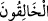

59. Onu siz mi yaratıyorsunuz yoksa yaratan biz miyiz?
“Onu siz mi yaratıyorsunuz,” yâni o menîye kadınların rahimlerinde gerek erkek
gerekse dişi olarak her organı düzgün bir insan biçiminde siz mi şekil veriyorsunuz
“yoksa” hiç bir şeyin etkisi olmaksızın onu “yaratan biz miyiz?”
edât-ı munkatıadır; çünkü kendinden sonra cümle gelmekte ve mânâ, “Hayır, yoksa
yaratan biz miyiz?” şeklinde olmaktadır. Soru da takrir için olmaktadır. edatının
muttasile olduğu da söylenmiştir. Buna göre (nahnü: biz) zamirinden sonra 
(hâlikun: yaratıcılar) lafzı tekid için gelmiştir, cümlenin haberi olarak değil.
Bu ifâdede şu mânâya da işâret vardır: Sizin kalp ve nefis rahimlerinize amellerin,
fiillerin ve bunların maddelerinin nutfelerinin düşmesi şübhesiz ki benim yaratmam ve
irâdem iledir; sizin irâde ve yaratmanızla değil. Bu sebeple amelleri, fiilleri ve sözleri
meydana getirmeye sevk eden niyetler ve helecanlar Allah’ın zâtına ve kudretine
mahsustur. Bunların hepsi O’nun ihsânı olup yaratılanlara âid bir şey yoktur.
60. Aranızda ölümü takdir eden biziz. Ve biz, önüne geçilebileceklerden değiliz.
“Aranızda ölümü takdir eden biziz.” Yâni biz çok yüce hikmetlere dayalı irâdemizle
sizin her birinize ölümü taksim edip her biriniz için belirli bir vakit belirledik. Bu
sebeple insanların bir kısmı küçük, bir kısmı da büyük yaşta ölürler.
Fakir (Bursevî) der ki: Bir seher vakti bana hâtiften: “Sabr et, Allah’ın takdîr
ettiğinden başka bir şey olmaz” denildi. Birkaç gün geçtikten sonra kızım Emetullah
hastalandı ve vefat etti. Allah onu bize şefâatçi, şefâati kabûl olan ve iyi bir öncü
eylesin. Bilindiği üzere İbrahim (a.s) oğlu İsmail’e bağlandı da onu kurban etmekle
imtihan edildi. Yakub (a.s) da aynı şekilde oğlu Yusuf’a sarıldı; onun ayrılık ve
hasretiyle imtihan edildi. Bunların hepsi rızâ gösterilmesi gereken ilâhî takdirlerdir. “Ve
biz önüne geçilebileceklerden değiliz;” biz gerçek mânâda güçlüyüz.
61. Böylece sizin yerinize benzerlerinizi getirelim ve sizi bilmediğiniz bir âlemde
tekrar var edelim diye (ölümü takdir ettik).
“Böylece sizin yerinize benzerlerinizi getirelim.” Bizim sizleri yok ederek yerinize
size benzeyen bir varlık getirmemizi hiç bir şey engelleyemez. “Ve sizin bilmediğiniz
bir âlemde tekrar var edelim diye (ölümü takdir ettik.)” Benzerini tanımadığınız,